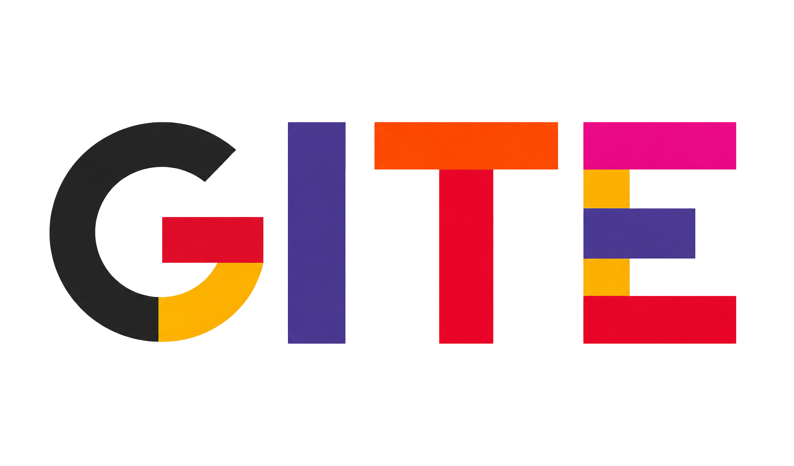

Investigación y Vinculación Tecnológica
Investigación aplicada, proyectos de cooperación y evaluación de tecnologías educativas, en articulación con las áreas competentes de la Facultad.
Experimentar, evaluar y documentar
Los proyectos del área podrán abordar inteligencia artificial, accesibilidad, tecnologías emergentes, entornos virtuales y uso de datos educativos. Cada piloto deberá precisar objetivos, recursos, responsables, criterios de evaluación y resultados esperados.
La vinculación se realizará mediante proyectos y acuerdos con departamentos, grupos de investigación, universidades y otras organizaciones, sin sustituir las competencias de la Secretaría de Ciencia y Tecnología.
La experimentación y el prototipado forman parte de los proyectos del área. El documento no propone crear un laboratorio ni una unidad organizativa adicional.
GITE
El Grupo de Investigación en Tecnología Educativa constituye un espacio específico de producción de conocimiento, con su propio sitio para difundir investigadores, líneas de investigación y publicaciones científicas.
Acceder al sitio de GITE ↗
Grupo de Investigación en Tecnología Educativa